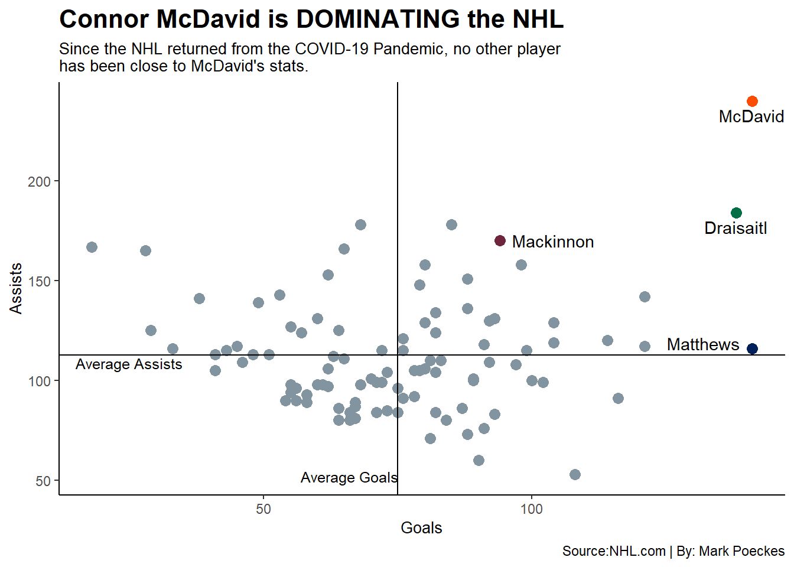

Code
library(tidyverse)
library(rvest)
library(fastRhockey)
library(ggplot2)
library(ggrepel)
library(ggalt)
library(gt)
library(cowplot)Mark Poeckes
May 5, 2023
Since the mid-2000’s two names have dominated the National Hockey League, Sidney Crosby and Alexander Ovechkin. With these two future Hall of Famers nearing the end of their respected careers, hockey fans did not have to wait long for another skater to take the spotlight. That skater is Connor McDavid and the former first overall pick by the Edmonton Oilers is running away from the competition.
Following the COVID-19 pandemic, McDavid has DOMINATED the NHL. Leading the league in points for three consecutive years and eclipsing his first 60 goal season in 2023. The chart below demonstrates the gap between McDavid the next best players in Hockey.
nhl2020_2021<-read_csv("NHL2020_2021 - Summary.csv")
nhl2021_2022<-read_csv("NHL2021_2022 - Summary.csv")
nhl2022_2023<-read_csv("NHL2022_2023 - Summary.csv")
PostCovidstats<-read_csv("NHLstats2020_2023 - Summary.csv")
mcjesus<-PostCovidstats %>%
filter(Player=="Connor McDavid")
kingsofleon<-PostCovidstats %>%
filter(Player=="Leon Draisaitl")
thestache<-PostCovidstats %>%
filter(Player=="Auston Matthews")
NatetheGreat<-PostCovidstats %>%
filter(Player=="Nathan MacKinnon")
ggplot()+
geom_point(
data =PostCovidstats,
aes(x=G,y=A), size=3, color="#8394A1"
) +
geom_point(
data =mcjesus,
aes(x=G,y=A), size=3, color="#fc4c02"
)+
geom_point(
data =kingsofleon,
aes(x=G,y=A), size=3, color="#006F46"
)+
geom_point(
data =thestache,
aes(x=G,y=A), size=3, color="#00205b"
)+
geom_point(
data =NatetheGreat,
aes(x=G,y=A), size=3, color="#6f263d"
)+
geom_text(data=mcjesus, aes(x=G, y=A-7, label = "McDavid"))+
geom_text(data=kingsofleon, aes(x=G, y=A-7, label = "Draisaitl"))+
geom_text(data=thestache, aes(x=G-9, y=A+2.5, label = "Matthews"))+
geom_text(data=NatetheGreat, aes(x=G+10, y=A, label = "Mackinnon"))+
annotate("text", x= 25, y= 108.69, label= "Average Assists", size= 3.25)+
annotate("text", x= 66, y= 52, label= "Average Goals", size= 3.25)+
geom_hline(yintercept=112.69)+
geom_vline(xintercept=74.99)+
labs(
x = "Goals",
y = "Assists",
title = "Connor McDavid is DOMINATING the NHL",
subtitle = "Since the NHL returned from the COVID-19 Pandemic, no other player \nhas been close to McDavid's stats.",
caption = "Source:NHL.com | By: Mark Poeckes"
)+
theme_classic()+
theme(
plot.title = element_text(size = 16, face = "bold"),
axis.title = element_text(size = 10),
plot.subtitle = element_text(size=10),
panel.grid.minor = element_blank()
)
When Comparing McDavid to the other top talents in the NHL, it becomes very evident that there is a gap between the Oilers captain and his competitors. Comparing him to last year’s Stanley Cup Champion, Nathan Mackinnon, and the 2022 NHL Regular Season MVP, Auston Matthews. It’s clear just how far ahead he is. One thing that this chart shows is that his closing competitor is his teammate, Leon Draisaitl.
Seeing how many points a player scores is great, but that just scratches the surface of how dominate McDavid has been. The table below exhibits three stats for the top 10 point scorers over the past 3 seasons. First is game winning goals, second is even strength goals, goals scored 5 on 5, and lastly is power play goals, goals scored when the players team has an extra player on the ice.
top10<-read_csv("Top10 - Summary (1).csv")
top10<- top10 %>%
select(Player, GWG, PPP, EVP)
top10 %>%
gt() %>%
cols_label(
Player = "Player",
GWG = "Game Winning Goals",
EVP = "Even Strength Points",
PPP = "Powerplay Points"
) %>%
tab_header(
title = "Is there anything McDavid can't do?",
subtitle = "He leads the league in game winning goals, even strength points and power play points "
)%>%
tab_style(
style = cell_text(color = "black", weight = "bold", align = "left"),
locations = cells_title("title")
) %>%
tab_style(
style = cell_text(color = "black", align = "left"),
locations = cells_title("subtitle")
) %>%
tab_source_note(
source_note = md("**By:** Mark Poeckes | **Source:** NHL.com")
) %>%
tab_style(
locations = cells_column_labels(columns = everything()),
style = list(
cell_borders(sides = "bottom", weight = px(3)),
cell_text(weight = "bold", size=12)
))| Is there anything McDavid can't do? | |||
| He leads the league in game winning goals, even strength points and power play points | |||
| Player | Game Winning Goals | Powerplay Points | Even Strength Points |
|---|---|---|---|
| Connor McDavid | 31 | 152 | 221 |
| Leon Draisaitl | 30 | 135 | 183 |
| Nathan MacKinnon | 16 | 86 | 178 |
| Mikko Rantanen | 18 | 96 | 167 |
| Mitchell Marner | 14 | 75 | 177 |
| Auston Matthews | 30 | 70 | 187 |
| Matthew Tkachuk | 12 | 80 | 175 |
| Artemi Panarin | 10 | 91 | 155 |
| Sidney Crosby | 23 | 79 | 159 |
| Johnny Gaudreau | 18 | 68 | 170 |
| By: Mark Poeckes | Source: NHL.com | |||
One of the biggest concerns with superstar talent is whether or not they can show up in the clutch moments of games. As seen above, McDavid excels at helping his team when it comes to putting games away. However, McDavid’s partner in crime, Leon Draisaitl, has proven himself to be one of best players in all of hockey. So what separates McDavid from Draisaitl?
Below the Chart analyzes the statistics from the 2022 NHL Stanley Cup Playoffs. The key stats for each graph are total points and overall plus-minus for each individual player.
playoffs<-read_csv("Playoffstats - Summary.csv")
mcjesusplayoffs<-playoffs %>%
filter(Player=="Connor McDavid")
kingsofleonplayoffs<-playoffs %>%
filter(Player=="Leon Draisaitl")
bar10<-
ggplot()+
geom_bar(data = playoffs, aes(x=reorder(Player,P), weight=P), fill = "#46444C") +
geom_bar(data = mcjesusplayoffs, aes(x=reorder(Player,P),weight=P), fill = "#fc4c02") +
geom_bar(data = kingsofleonplayoffs, aes(x=reorder(Player,P), weight=P), fill ="#006F46")+ coord_flip()+ theme_classic() +
labs(
x="Player Name",
y=" Total Points from the 2022 Stanley Cup Playoffs",
title = "Edmonton Needed Connor McDavid",
subtitle = "Despite having the best number two option in hockey. McDavid's presence \n on the ice affected how the Oilers performed on both sides of the ice"
)+
theme(
plot.title = element_text(size = 16, face = "bold"),
axis.title = element_text(size = 8,face = "bold"),
plot.subtitle = element_text(size=8),
panel.grid.minor = element_blank()
)
bar15<-ggplot()+
geom_bar(data = playoffs, aes(x=reorder(Player,`+/-`), weight = `+/-`), fill= "#46444C")+ geom_bar(data = mcjesusplayoffs, aes(x=reorder(Player,`+/-`),weight=`+/-`), fill = "#fc4c02") +
geom_bar(data = kingsofleonplayoffs, aes(x=reorder(Player,`+/-`), weight=`+/-`), fill ="#006F46")+ coord_flip() + theme_classic()+
labs(
x= "Player Name",
y= "Total Plus-Minus from the 2022 Stanley Cup Playoffs",
caption = "Source: NHL.com | By: Mark Poeckes"
)+
theme(
plot.title = element_text(size = 16, face = "bold"),
axis.title = element_text(size = 8,face = "bold"),
plot.subtitle = element_text(size=8),
panel.grid.minor = element_blank()
)As seen above, Draisaitl and McDavid are the clear top scorers for he 2022 postseason. What makes this even more special is when you include the fact that they played less at least four less games when compared to the other top ten players.But that does not answer the question, of what seperates McDavid from Draisaitl?
The bottom graph shows each individuals plus-minus. The plus-minus statistics subtracts the goals conceeded from goals scored while a skater is on the ice. By analyzing the plus-minus of each player, it becomes evident that while on the ice, Connor McDavid’s effect has helped raise the Oiler’s level of play.
With the addition of McDavid’s first Rocket Richard Trophy and another Hart Memorial Trophy likely going his way. It becomes very clear that if he can stay healthy, Connor McDavid’s trophy case at the end of his career will be a competitor to the Great One, Wayne Gretzky.